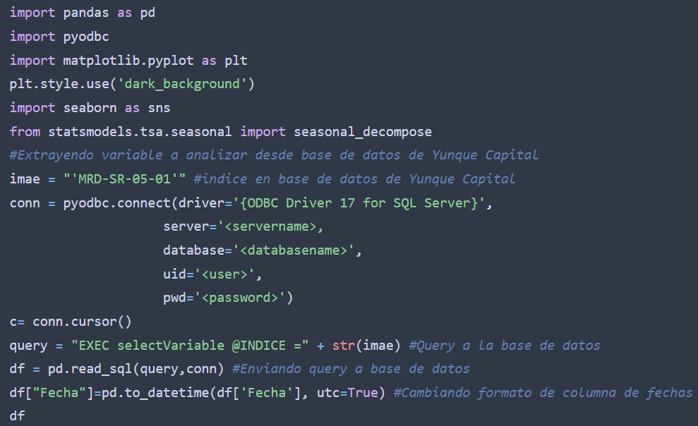

Método Clásico de Descomposición de Serie Temporal
Una descomposición de serie temporal es un método estadístico utilizado para separar una serie
de tiempo en diferentes componentes, con el objetivo de analizar y comprender mejor su
comportamiento y patrones. A continuación estaremos desglosando mediante el Método Clásico de
Descomposición de Series Temporales el Índice Mensual de Actividad Económica (IMAE) de la
República Dominicana.
Al mismo tiempo estaré compartiendo el código de Python utilizado para generar cada una de las
etapas de este análisis. En mis caso la data se estará extrayendo directamente desde la base de
datos de Yunque Capital (firma en que colaboro actualmente) para mayor facilidad en cuanto al
filtrado y preparación de la data, pero la misma puede ser encontrada en el sitio web del Banco
Central de la Rapública Dominicana (link en anexos). Empecemos.
Código
Resultado

Una manera eficiente de observar este tipo de variables es separando la leyendo por períodos, por ejemplo:
Código

Resultado
A diferencia del 2020 (Año del COVID-19) se puede observar un comportamiento similar en en cada
año.
El Método Clásico de Descomposición de Series Temporales se puede modelar con los métodos
Aditivo y Multiplicativo. Para determinar qué modelo utilizar se suelen tomar en cuenta las
siguientes características
Aditivo
- Model‚Äôs form‚Äîùë¶ùë¶(ùë°ùë°) = level + trend + seasonality + noise
- Linear model—changes over time are consistent in size
- he trend is linear (straight line)
- Linear seasonality with the same frequency (width) and amplitude (height) of cycles over time
Multiplicativo
- Model‚Äôs form‚Äîùë¶(t) = level * trend * seasonality * noise
- Non-linear model—changes over time are not consistent in size, for example, exponential
- A curved, non-linear trend
- Non-linear seasonality with increasing/decreasing frequency and amplitude of cycles over time
Para decidir qué metodología tomar, evaluemos la el comportamiento del IMAE en conjunto con una media y una desviación estándar, ambas calculadas en base a los últimos 12 meses.
Código

Resultado

Obviando el comportamiento del COVID-19 se podrímos concluir que la variable tiene un comportamiento que puede ser analizado con un modelo aditivo. Veamos los resultados.
Código

Resultado
En este cuadro de descomposicion podemos observar por separado cada uno de los componentes: tendencia, estacionalidad y aliatoriedad (residuo). Podemos evaluar si la la descomposicion tiene sentido observando el componente de aliatoriedad. Viendo que no existe ningun patron podriamos concluir que el modelo se ajusta correctamente.